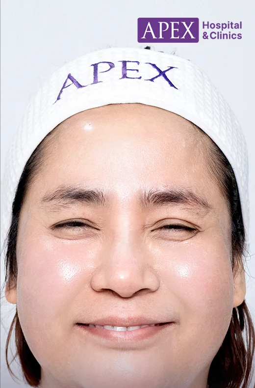

Treatments · Contour
Botox
Botox relaxes the muscle under a line or a wide jaw. It works on lines that come from movement, like frowning and squinting, and on a jaw muscle that makes the lower face look square.
It can't fill a deep fold, melt fat or shrink bone, so your doctor first checks that a muscle is causing the problem.
How it works

- I
Frowning, squinting and clenching fold the skin above the muscle into lines. A strong chewing muscle widens the jaw.
- II
Your doctor injects a set number of units into that muscle.
- III
The muscle works less for 3 to 4 months, so the skin above it lies flat and the jaw slims down.
Not suited for
- Deep folds and hollowsThey come from lost volume, so filler is the treatment for them.Pair it with Filler
- FatBotox relaxes muscle and leaves fat as it is.
- BoneA jaw that is wide from bone stays the same width.
Treatment areas
Face
- Forehead10 to 20 units
- Between the brows15 to 25
- Crow's feet5 to 15 a side
- Jaw20 to 30 a side
- Mouth corners2 to 5 a side
- Chin4 to 8
Body
- Neck and face liftabout 20 to 40
- Shoulders20 to 50 a side
- Calves50 to 100 a side
- Underarm sweatabout 50 a side
The units are typical amounts, and your doctor sets the dose for your muscle. 50 units covers one or two face areas, and 100 units covers both sides of the jaw or the forehead, frown and crow's feet together.
Your visit
- I
Muscle check
Your doctor watches you frown, smile and clench to find the muscle behind the problem.
- II
The dose
You agree the areas and units before anything starts. Ask to see the product, its units and lot number.
- III
The pinch
Most people feel a light pinch at each point that lasts a few seconds.
- IV
The first hours
Stay upright for 3 to 4 hours, skip hard exercise for 2 hours and leave the area unmassaged for a day.
- V
Two weeks on
Lines are at their smoothest by now, and the jaw keeps slimming for a few more weeks.
When you see results
- Day 1 to 2Lines start to soften
- Week 1 to 2Full effect on lines
- Month 1 to 3Jaw looks slimmest
- Month 3 to 4Movement slowly returns
- After 90 daysReady for the next session


Before and after
Botox at Apex. Drag the line across the photo to compare.
Individual results vary.
Botox prices
| Brand | From, per 100 units |
|---|---|
| Aestox or Neuronox, Korea | 7,500 baht |
| Nabota, Korea | 8,700 baht |
| Xeomin, Germany | 13,900 baht |
| Dysport, UK (300 units) | 15,900 baht |
| Botox Allergan, USA | 17,999 baht |
Package
Korean Botox, 50 units
from 3,500 baht
Package
Korean Botox, 100 units
from 6,990 baht
Prices and promotions change, so check the latest on LINE @apexbeauty.
Before and after your visit
Before you come
- Tell your doctorAny illness, medicine, supplement, allergy or earlier Botox.
- No alcoholSkip it for about a day before so you bruise less.
- Keep your medicineNever stop anything prescribed. Mention blood thinners, ibuprofen and antibiotics.
- Move the dateYour doctor waits if the area is infected or inflamed.
After you leave
Right away- Wash your face, patting dry
- Light makeup, patted on
- Eat as normal
- Exercise again
- Lie down as usual
- Facials and massage
- Alcohol again
Questions
Does it hurt?
You feel a light pinch or sting at each point, and it passes in seconds.
Will my face look slimmer?
Yes if the width comes from the jaw muscle. Bone, fat or loose skin need a different treatment.
How often can I have it?
Leave at least 90 days between sessions. More often doesn't make it work better.
Can I exercise afterwards?
Wait about 2 hours, and skip hard exercise that day if you bruise easily.
When can I lie down?
After 3 to 4 hours you can lie flat or on your side as normal.
What if my eyes feel stiff?
The muscle relaxed more than planned. It eases as the Botox wears off, so come back for your doctor to check.
Can I have it while pregnant or breastfeeding?
Wait until after, since there isn't enough safety data.
Korean or American?
They differ in maker, formula and price. American Botox has the most research, and Korean brands cost less.
Sources
- Apex Medical Center, "What is a Botox injection", apexmedicalcenter.co.th/botox-injection
- AbbVie, BOTOX Cosmetic prescribing information
- American Academy of Dermatology, botulinum toxin FAQs
- Thai Red Cross, blood donor eligibility